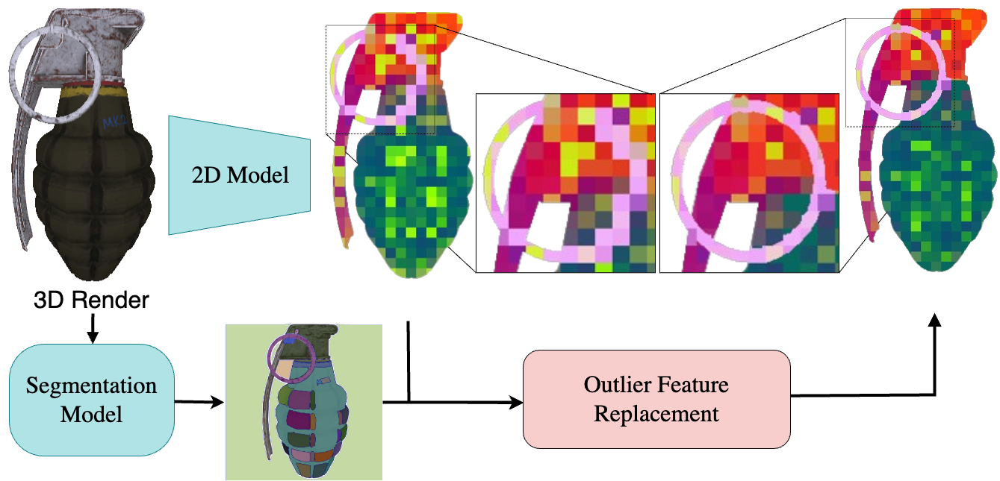
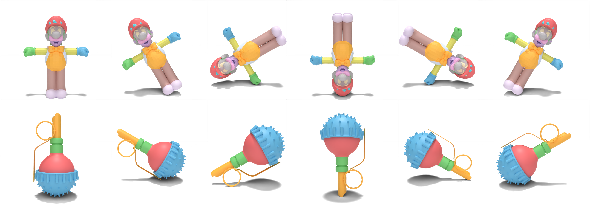
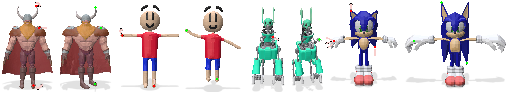

MeshFM: 2D Features Are All You Need for3D Shape Understanding
University of Chicago
*Equal contribution
We present MeshFM, an efficient feedforward framework for extracting rich features from 3D inputs. Our method distills 2D features from visual foundation models into 3D. We train a feedforward network to directly predict 3D features without requiring optimization during inference. The approach utilizes a two-stage training strategy. First, we optimize a feature field in 3D using only 2D feature supervision. Second, we train a network to regress this feature field. The entire procedure requires no 3D annotation, instead relying on the powerful information in 2D foundation models. We demonstrate that our learned features can be immediately applied to downstream tasks, including part segmentation, dense correspondence, and mesh deformation. Extensive experiments show that MeshFM, trained solely with 2D supervision, performs on par with methods trained explicitly with 3D supervision, even without task-specific fine-tuning. Moreover, our model is trained to be robust to extreme rotations of the input objects.

Training pipeline overview. The training phase of MeshFM includes two stages. 1 In the first stage, we distill the information from a 2D foundation model into 3D feature fields: 2D feature maps are extracted from multi-view renderings of the mesh and projected to the mesh surface, and a neural model learns to map 3D coordinates on the mesh to the reference features. 2 In the second stage, we use the teacher feature fields to train a feedforward feature prediction model. The model takes a point cloud sampled from the mesh surface and learns to output the point features from the supervising 3D teacher fields. At inference, the feedforward model predicts surface features for unseen shapes in a single pass, with no per-shape optimization.

Before distilling 2D features into 3D, we correct the feature aliasing created by patch-based image encoder architectures through fine-grained image segmentation. The segmentation groups define pixel clusters that are assumed to have similar deep features. Pixels with features substantially different than the cluster median are replaced by the median. The resulting feature map has much less blurring at semantic boundaries and more stable features within semantic groups — yielding cleaner supervision for the 3D feature field.

We visualize our segmentation results for different rotations of the input shape. MeshFM is highly robust to rotations, where the segmentation remains consistent under large rotations in the full SO(3) group.
Drag to rotate, scroll to zoom — move the slider to change the segmentation granularity.
Character
Rifle
Temple
Drag any result to rotate it, scroll to zoom. Shapes are shown in the rotated poses used for the benchmark.
Drag any result to rotate it, scroll to zoom. Shapes are shown in the rotated poses used for the benchmark.

@InProceedings{zhou2026meshfm,
author = {Zhou, Jinfan and Liu, Richard and Lang, Itai and Hanocka, Rana},
title = {{2D Features Are All You Need for 3D Shape Understanding}},
booktitle = {Proceedings of the European Conference on Computer Vision (ECCV)},
year = {2026}
}